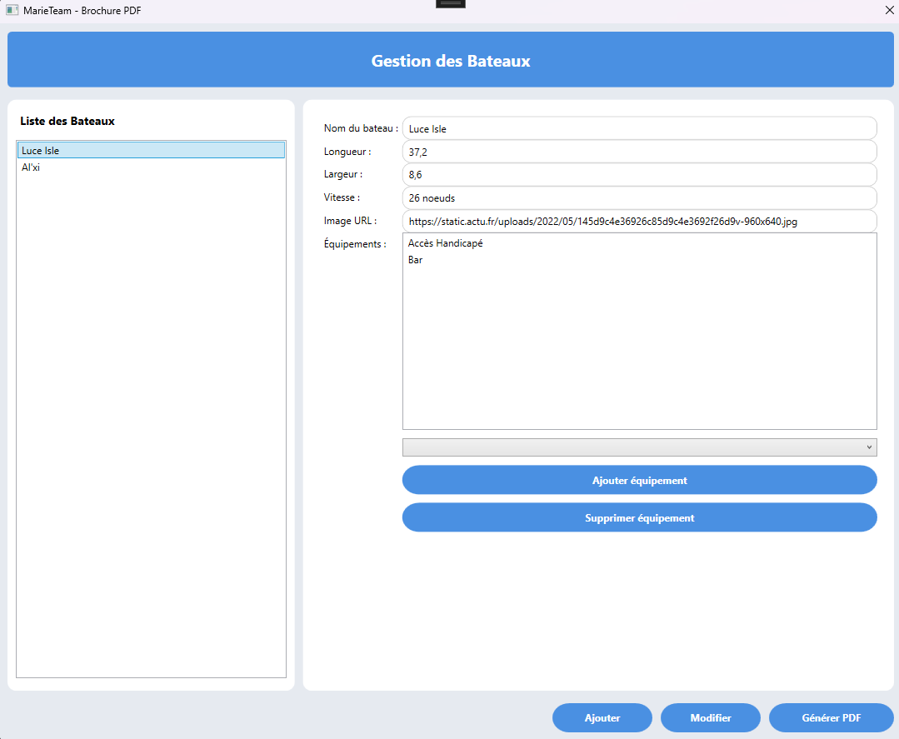

MarieTeam

Organisation du Projet
Nous avons débuté par la rédaction simultanée d’un résumé du cahier des charges, incluant le dictionnaire de données (voir document).
En parallèle, nous avons réalisé un diagramme de Gantt. Profitant de notre effectif, nous avons simultanément commencé la conception du MCD, puis du MLD, ainsi que du diagramme de cas d'utilisation.
Le projet a ensuite suivi les étapes définies dans le diagramme de Gantt, tout en restant flexible face aux imprévus tels que l'absence de certains membres ou des retards sur certaines tâches.
Afin de faciliter la collaboration, nous avons mis en place un dépôt GitHub partagé.
Enfin, nous avons entamé le développement du site web ainsi que de l’application C#, en suivant les étapes prévues par le diagramme de Gantt.
Description du Projet
Ce projet consiste à développer deux solutions distinctes pour la compagnie MarieTeam :
1. Client Web
Un site web permettant la gestion et la consultation des liaisons maritimes, des tarifs, des horaires, ainsi que la réservation en ligne. Les informations sont générées dynamiquement à partir d'une base de données, et l'application est optimisée pour une large gamme d'appareils (smartphones, tablettes, PC).
Technologies Utilisées
- HTML5 et CSS3
- JavaScript
- PHP (Backend)
- C#
- MySQL (Base de données)
- Github (Gestion de versions)
- Adobe XD (Maquette)
Fonctionnalités Principales
- Consultation des horaires des traversées et disponibilité en temps réel
- Réservation en ligne avec récapitulatif personnalisé
- Gestion des droits d’accès pour le personnel et les gestionnaires
- Compatibilité multiplateforme et responsive design
- Visualisation des statistiques pour les gestionnaires
Plus concrètement :
Diagramme de Gantt

Diagramme de cas d'utilisation

Mise en place du Github :
Voici le lien vers le Github du projet : https://github.com/Beno04/AP_realpro_1


Création d'un MCD

Parti Utilisateur :
L'index du site

Page de connexion

Page de choix de la traversées :

Page réservation permettant de choisir le nombre de chaque reservation de personnes et véhicule (s'adapte en temps réel de la place disponnible) :

Page Payer qui résumer le montant et toutes les informations de la traversées et de la réservation :

Parti administrateur :
L'index du site en tant qu'administrateur

Page statistiques selon les dates choisis

Page permettant d'ajouter des traversées

2. Client Lourd
Une application qui permet de générer des PDF des bateaux à partir des données de la base de données. De plus, si l'utilisateur est administrateur, il a la possibilité de créer, modifier ou supprimer des bateaux.
Technologies Utilisées
- C#
- MySQL (Base de données)
Fonctionnalités Principales
- Génération automatique de PDFs des informations des bateaux.
- Interface utilisateur pour afficher les informations des bateaux sous forme de liste.
- Accès administrateur permettant de créer, modifier et supprimer des bateaux dans la base de données.
- Filtrage et recherche des bateaux selon différents critères (nom, type, etc.).
- Gestion des rôles utilisateurs avec des droits d'accès spécifiques.
Plus concrètement :
Lorsque l'on lance l'application nous avons besoin de nous connecter
Si on ce connecte avec un compte Utilisateur voici l'affichage que l'on aura :
Si on ce connecte avec un compte Admin voici l'affichage que l'on aurras :
Et voici le PDF que l'application génère